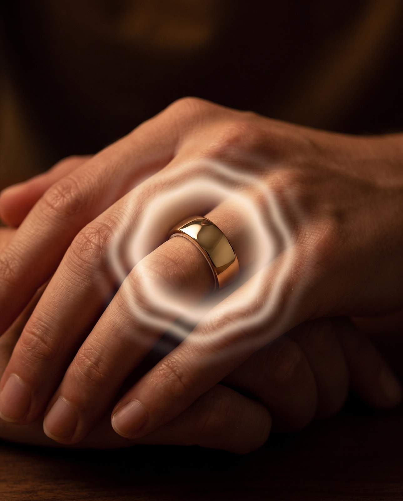
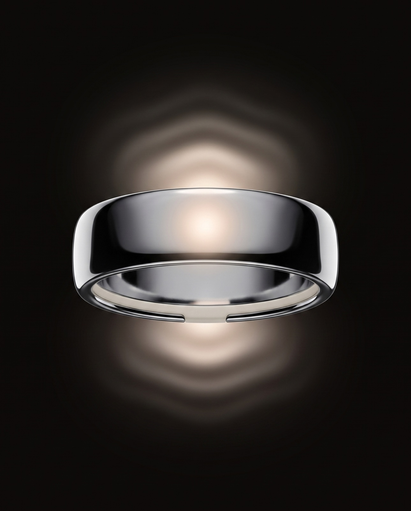
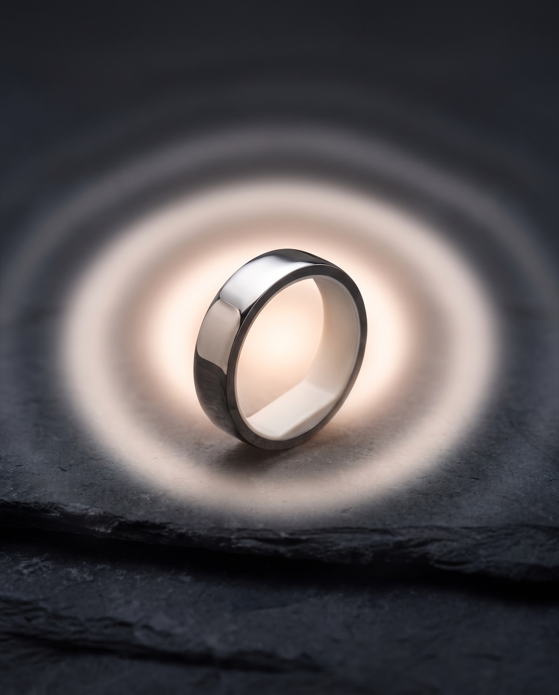
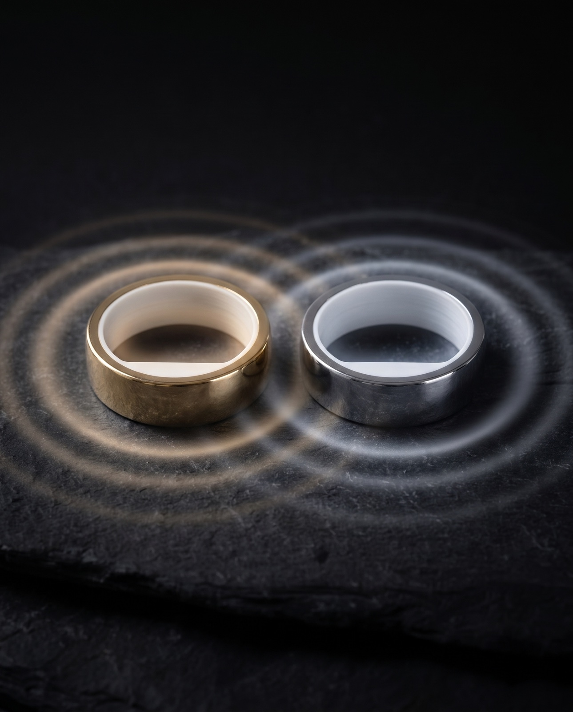
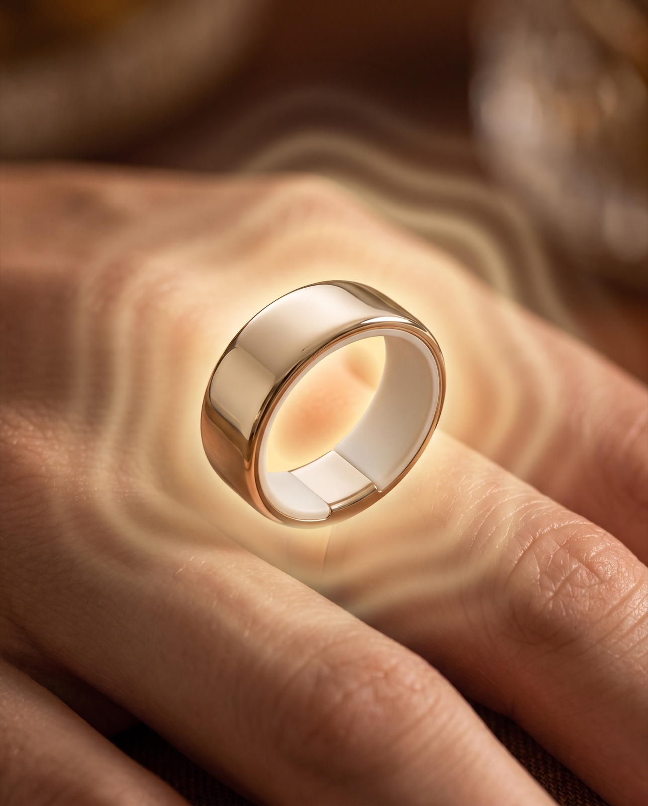
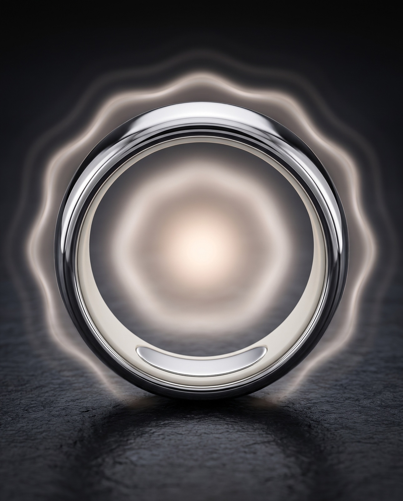

One gentle vibration, many meanings. Every Pulse is the same core motion — a soft glow that diffuses and ripples outward, centered on the ring — but its rhythm and reach change with meaning, so the wearer feels, without looking, what it's saying. This is the visual language of the pulse: the style, the meaning, and the moment.

They tapped their ring. A world away or a room away, you feel two soft beats — and you know it's them. Presence you can send.

The everyday nudge. One quiet ring, a few times an hour, drawing you out of the scroll and back into the room you're actually in.

A single wide wave that expands over the length of one deep breath. Follow it in, follow it out. The nervous system settles.

When two people choose the same moment, their rings pulse as one — two waves that meet in the middle. Apart, but present at once.

Not a nudge to move on — an invitation to stay. A soft golden shimmer that says this ordinary moment is worth another second of your attention.

A sharper, faster pulse for the moments that ask for your whole mind. Not stress — clarity. A tap back to the one thing that matters now.